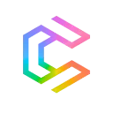

МолекулаАгрегаторы нейросетей
Молекула объединяет модели для текстов, изображений, видео и музыки. В одном аккаунте можно подобрать инструмент под этап работы, сохранить инструкции проекта и использовать готовые роли.
К задаче в МолекулеМонтаж и редактирование: Сравните точность автоматических склеек и редактирование таймлайна. Проверьте итоговый звук и субтитры перед экспортом.
Сначала соберите утверждённые кадры, речь и музыку. Молекула поможет описать порядок сборки и контрольные точки; финальную склейку выполняйте в выбранном монтажном редакторе.
Есть демонстрация товара, крупный план механизма и финальный кадр упаковки. Составь монтажный план короткого ролика: порядок, назначение каждого кадра и места для подписи.

Молекула объединяет модели для текстов, изображений, видео и музыки. В одном аккаунте можно подобрать инструмент под этап работы, сохранить инструкции проекта и использовать готовые роли.
К задаче в Молекуле
В инструменте «Crayo» можно собирать видеосцену по описанию или визуальному исходнику. Ещё одно направление работы: готовить видеоматериалы для публикации.

Clipfly относится к инструментам, которые помогают готовить музыкальную композицию по заданию. Ещё одно направление работы: собирать видеосцену по описанию или визуальному исходнику.

NVIDIA Studio используют для задачи: готовить трёхмерный объект для проекта. Ещё одно направление работы: собирать видеосцену по описанию или визуальному исходнику.

Zeemo создаёт субтитры для видео и предоставляет средства их дальнейшей правки. Пользователь может работать с динамическим оформлением, переводить текст и редактировать субтитры группами. Дополнительные видеоинструменты служат для подготовки публикаций, где нужно сочетать исходный ролик с читаемым текстовым сопровождением на разных языках.

ChapterMe рассчитан на задачи, где нужно собирать видеосцену по описанию или визуальному исходнику. Ещё одно направление работы: готовить видеоматериалы для публикации.

LTX Studio рассчитан на задачи, где нужно собирать видеосцену по описанию или визуальному исходнику. Ещё одно направление работы: готовить видеоматериалы для публикации.

StreamLadder используют для задачи: собирать видеосцену по описанию или визуальному исходнику. Ещё одно направление работы: готовить видеоматериалы для публикации.

Vizard.ai используют для задачи: собирать видеосцену по описанию или визуальному исходнику. Ещё одно направление работы: готовить видеоматериалы для публикации.

Capsule рассчитан на задачи, где нужно собирать видеосцену по описанию или визуальному исходнику. Ещё одно направление работы: готовить видеоматериалы для публикации.

DupDub предназначен для получения речи из текста на разных языках и с различными акцентами. Сервис объединяет синтез голоса с инструментами редактирования звукового материала. Его основной сценарий связан с подготовкой озвучки: исходный текст становится речевой дорожкой, которую затем можно дорабатывать в голосовой студии.

FaceSwapper.ai относится к инструментам, которые помогают переносить образ лица на изображение или видеокадр. Ещё одно направление работы: получать изображения из словесного задания.

Flowjin относится к инструментам, которые помогают собирать видеосцену по описанию или визуальному исходнику. Ещё одно направление работы: готовить видеоматериалы для публикации.

Spikes Studio используют для задачи: собирать видеосцену по описанию или визуальному исходнику. Ещё одно направление работы: готовить видеоматериалы для публикации.

В инструменте «Visla» можно собирать видеосцену по описанию или визуальному исходнику. Ещё одно направление работы: готовить видеоматериалы для публикации.

Async используют, чтобы собирать видеосцену по описанию или визуальному исходнику. Ещё одно направление работы: готовить видеоматериалы для публикации.

BGRemover.video используют, чтобы собирать видеосцену по описанию или визуальному исходнику. Ещё одно направление работы: готовить видеоматериалы для публикации.

В инструменте «HitPaw Edimakor» можно собирать видеосцену по описанию или визуальному исходнику. Ещё одно направление работы: готовить видеоматериалы для публикации.

Plask Motion используют, чтобы готовить трёхмерный объект для проекта. Ещё одно направление работы: собирать видеосцену по описанию или визуальному исходнику.

CapCut предназначен для монтажа видео, оформления субтитров и обработки звука. Автоматические инструменты помогают подготовить черновик, который нужно проверить перед экспортом.

DomoAI создаёт визуальные эффекты с помощью набора ИИ-моделей. Среди описанных направлений есть аниме и бумажная стилизация, а также трёхмерные мультяшные варианты и пиксельная графика. Пользователь может выбирать художественную подачу, связывая замысел изображения с доступными стилями обработки продукта.

OpusClip используют, чтобы готовить видеоматериалы для публикации. Ещё одно направление работы: дорабатывать записанное видео.

Vmake AI используют для задачи: собирать видеосцену по описанию или визуальному исходнику. Ещё одно направление работы: готовить материалы о товарах и услугах.

Colourlab AI используют для задачи: дорабатывать записанное видео. Ещё одно направление работы: менять фотографии с учётом выбранного оформления.

Move AI используют для задачи: дорабатывать записанное видео. Ещё одно направление работы: подготавливать визуальные сцены и анимацию.

Quso.ai рассчитан на задачи, где нужно собирать видеосцену по описанию или визуальному исходнику. Ещё одно направление работы: готовить видеоматериалы для публикации.

Topaz Video AI используют, чтобы собирать видеосцену по описанию или визуальному исходнику. Ещё одно направление работы: готовить видеоматериалы для публикации.

Wisecut рассчитан на задачи, где нужно собирать видеосцену по описанию или визуальному исходнику. Ещё одно направление работы: готовить видеоматериалы для публикации.

Zubtitle представляет собой онлайн-редактор для подготовки видео к публикации в соцсетях. В нём предусмотрены автоматическое получение субтитров и настройка их оформления. Пользователь также может менять размеры кадра и обрезать ролик, сочетая текстовое сопровождение с адаптацией исходного видео под выбранный формат публикации.

В инструменте «Arcads» можно готовить материалы о товарах и услугах. Ещё одно направление работы: собирать видеосцену по описанию или визуальному исходнику.

Google Vids относится к инструментам, которые помогают собирать видеосцену по описанию или визуальному исходнику. Ещё одно направление работы: готовить видеоматериалы для публикации.

Lanta AI используют для задачи: собирать видеосцену по описанию или визуальному исходнику. Ещё одно направление работы: готовить видеоматериалы для публикации.

VEED.IO объединяет браузерный видеоредактор, субтитры и инструменты ИИ для создания материала. Подходит для оформления коротких публикаций и обработки готовой записи.

Vidgo AI используют, чтобы собирать видеосцену по описанию или визуальному исходнику. Ещё одно направление работы: готовить видеоматериалы для публикации.

Descript связывает монтаж аудио и видео с текстовой расшифровкой. Позволяет менять запись через её содержание, обрабатывать звук и готовить короткие версии материала.

Klap используют для задачи: собирать видеосцену по описанию или визуальному исходнику. Ещё одно направление работы: готовить видеоматериалы для публикации.

В инструменте «Loom AI» можно собирать видеосцену по описанию или визуальному исходнику. Ещё одно направление работы: сокращать материал до основных положений.

В инструменте «Spot AI» можно собирать видеосцену по описанию или визуальному исходнику. Ещё одно направление работы: выполнять задачи с веб-страницами.

Captions.ai используют, чтобы готовить видеоматериалы для публикации. Ещё одно направление работы: дорабатывать записанное видео.

Submagic рассчитан на задачи, где нужно собирать видеосцену по описанию или визуальному исходнику. Ещё одно направление работы: готовить видеоматериалы для публикации.

Jupitrr AI используют для задачи: собирать видеосцену по описанию или визуальному исходнику. Ещё одно направление работы: готовить видеоматериалы для публикации.

AdpexAI используют для задачи: собирать видеосцену по описанию или визуальному исходнику. Ещё одно направление работы: получать изображения из словесного задания.

TinyFile Bot относится к инструментам, которые помогают собирать видеосцену по описанию или визуальному исходнику. Ещё одно направление работы: готовить видеоматериалы для публикации.
Страница 1 из 1
Для короткой публикации из интервью оставьте вопрос, существенный ответ и оговорку, без которой меняется совет. Просмотрите соседние реплики: выразительная фраза может относиться к конкретному примеру. До эффектов и титров решите, что зритель должен понять из этого фрагмента.
Сохраните оригинальную запись и отметьте предполагаемые сокращения. Пауза иногда показывает сомнение, а повтор уточняет условие. Удалять их автоматически удобно только после проверки содержания. Затем прослушайте стыки, где соседние предложения меняют интонацию.
Descript связывает изменения расшифровки с соответствующими участками аудио и видео. Он удобен для редакторской работы с речью. Сначала исправьте значимые ошибки распознавания, затем проверьте, что удаление слов не изменило смысл ответа и характер подачи.
CapCut объединяет монтаж с оформлением коротких роликов и субтитрами. При подготовке вертикальной версии проверьте движение героя и видимость предмета. Кадрирование только по лицу может убрать жест, который объясняет действие.
VEED.IO предлагает браузерную сборку, обработку звука и подписи. Его стоит сопоставлять по удобству совместной правки и финальному формату. В каждом случае испытайте полный путь от исходника до файла, который действительно будет опубликован.
Смотрите ролик со звуком и без него. Проверьте имена, числа и отрицания в субтитрах. Текст не должен закрывать существенный элемент кадра, а музыка мешать словам. После экспорта откройте файл отдельно и просмотрите начало, все склейки и последний момент.
Для интервью согласуйте порядок редакторских изменений с участником и проверьте права на дополнительные материалы. Если требуется недостающий визуальный план, обратитесь к категории генерации видео, сохраняя различие между исходной записью и созданной иллюстрацией.
Назовите согласованный экспорт по содержанию и редакции. Ранние версии могут содержать непринятый заголовок или другой фрагмент ответа, поэтому получатель должен без пояснений находить именно готовый материал.